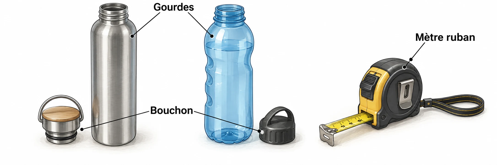

OBSERVER · EXPÉRIMENTER · EXPLIQUER
La gourde change de forme
Compare les gourdes, puis manipule deux bouchons. Observe les mouvements et les fuites avant et après fermeture complète.

✎ Garde ta feuille à côté de toi.Ordinateur : manipulations et mesures simulées. Papier : relevés, réponses, calculs et croquis. Matériel réel : essai complémentaire si disponible.
Familles et évolutions des gourdes
- Documents : une gourde, une tasse et un sac à dos. La gourde transporte une boisson ; la tasse permet de boire ; le sac transporte les affaires. Choisis un critère de fonction pour regrouper les objets. Explique ton regroupement.
- Lignée fictive : modèle A, bouteille réutilisable avec bouchon fixe ; modèle B, même bouteille avec bouchon remplaçable ; modèle C, même bouteille avec bouchon remplaçable et joint remplaçable. Trace A → B → C. Sous chaque flèche, écris le besoin auquel répond le changement.
- Si seul le joint fuit, que remplaces-tu avec C ? Compare les déchets produits avec le remplacement de toute la bouteille. Cite une information manquante pour connaître l’impact environnemental total.
Des observations pour expliquer
- Q1–Q2 : relève les masses, classe les gourdes, puis choisis avec les quatre critères du club.
- Q3 : relève les mouvements et les observations avant et après fermeture complète dans ton tableau papier.
- Q4 : repère deux étapes du cycle de vie et explique l’intérêt de remplacer le bouchon.
Appuie ton explication sur une valeur, un changement observé ou une comparaison. Distingue ce que montre le modèle et ce qui reste à vérifier.